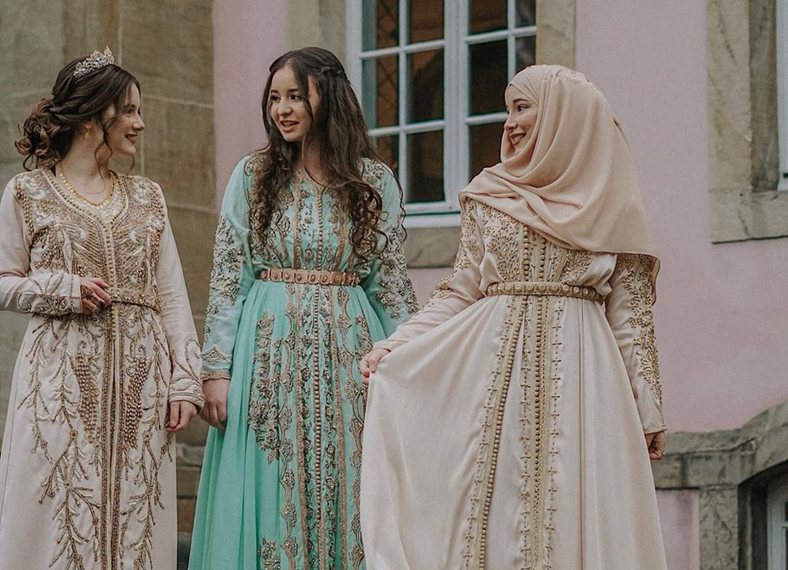
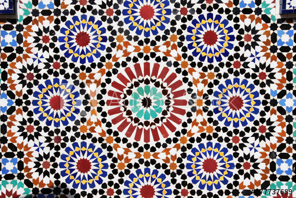

Mint Tea
Mint tea is a core item in Moroccan culture. It is enjoyed frequently throughout the day with family or friends, and is accompanied by nuts, dates, and dried fruit.
Last updated 09/18/2020

Traditional Clothes
Moroccan attire is full of rich traditions and worn by locals. The Djellaba is the most commonly worn item by both men and women. Other clothing include the Gandora and Kaftan.
Last updated 09/18/2020

Mosaics
Moroccan mosaics are called Zellij. They are made from individually hand-chiseled tile pieces that are formed into a base made of plaster. They can be seen mostly everywhere in the country!
Last updated 09/18/2020